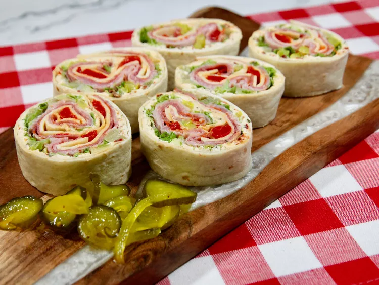

Italian Pinwheeels

Description
These Italian pinwheels are a finger food roll-up snack, a crowd-pleasing appetizer, or a light lunch that’s packed with all the flavors you love in an Italian sub sandwich.
Ingredients
Cream Cheese Spread:
- 8 ounces cream cheese, softened
- 1/4 cup finely grated Parmesan cheese
- 2 tablespoons minced oil-packed sun-dried tomatoes
- 1 teaspoon Italian seasoning
- 1 teaspoon garlic powder
- 1 teaspoon Italian salad dressing
Pinwheels:
- 2 (10 inch) flour tortillas
- 2 cups finely shredded Romaine lettuce
- 1/3 cup roughly chopped banana peppers, patted dry
- 6 thinly sliced salami
- 6 thinnly sliced ham
- 6 thinly sliced capicola (optional)
- 6 slices provolone cheese
- 1/3 cup roughly chopped roasted red peppers, patted dry
Steps
- Combine cream cheese, Parmesan cheese, sun-dried tomatoes, Italian seasoning, garlic powder, and Italian salad dressing in a bowl until well blended.
- Spread half the cream cheese mixture over each tortilla, leaving a 1/2-inch border around the edge. Evenly scatter lettuce over cream cheese spread, and top with banana peppers.
- Evenly layer salami, ham, capicola, and provolone on each tortilla and top with roasted red peppers.
- Roll up tightly, wrap in plastic wrap, and refrigerate for at least 1 hour. Use a sharp serrated knife to slice into 1-inch pinwheels, and serve.